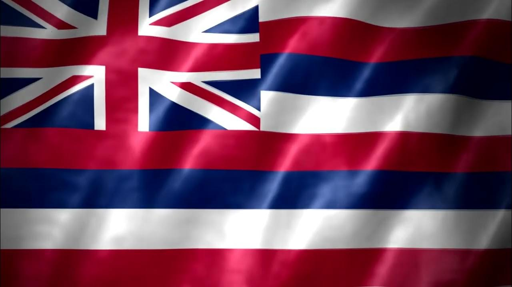

Lugares Turisticos
HONOLULU (OAHU)
Honolulu es la capital de Hawái y está ubicada en la isla de Oʻahu. Es famosa por sus playas como Waikiki, su historia en Pearl Harbor, y su mezcla única de cultura hawaiana y estilo urbano moderno. Con clima tropical, paisajes volcánicos y una vibrante vida cultural, es uno de los destinos más visitados del Pacífico.
HALEAKALĀ (MAUI)
Haleakalā es un enorme volcán en la isla de Maui, conocido por su cráter gigante y sus amaneceres espectaculares desde la cima. Forma parte del Parque Nacional Haleakalā, que protege ecosistemas únicos, especies nativas y paisajes volcánicos impresionantes. Es uno de los lugares más emblemáticos de Hawái para el senderismo, la astronomía y la conexión con la naturaleza.
NA PALI COAST (KAUAI)
La Na Pali Coast, en la isla de Kauaʻi, es una de las costas más impresionantes del mundo. Sus acantilados escarpados, valles verdes y cascadas que caen al océano forman un paisaje espectacular e inaccesible por carretera. Solo se puede explorar por mar, aire o a pie por el exigente sendero Kalalau. Es un tesoro natural de Hawái, famoso por su belleza virgen y su valor cultural e histórico.
COMIDA TIPICA
POKE
Plato de trozos de pescado crudo (generalmente atún), marinados con salsa de soya, sésamo, cebolla y otros ingredientes, servido solo o sobre arroz.

Himno a Hawaii
Aquí tienes la letra del himno oficial del estado de Hawái, conocido como "Hawaiʻi Ponoʻī", escrito por el rey Kalākaua con música de Henry Berger, inspirado en los himnos reales europeos. Fue el himno del Reino de Hawái y hoy es el himno estatal.